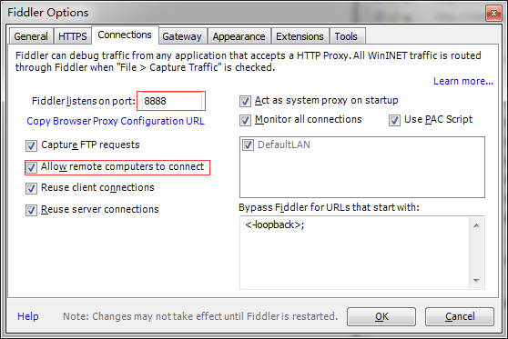
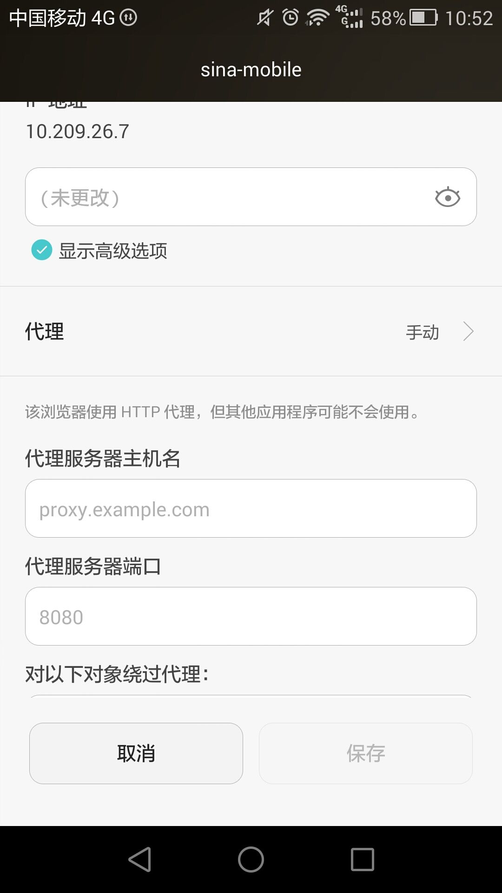
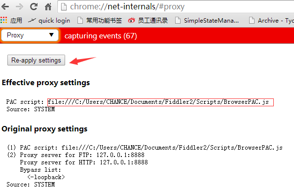

# lny.1000moons.com就是你的域名，G:盘就是你的工作目录 <VirtualHost *:80> ServerName dc.bq69.com DocumentRoot G: <Directory "G:"> Options Indexes FollowSymLinks Includes ExecCGI AllowOverride All Order allow,deny Allow from all </Directory></VirtualHost>
127.0.0.1 lny.1000moons.com


